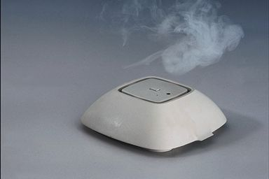

 不同年龄，体温也略有不同： 新生儿： 因体温调节中枢机能尚未发达，容易受环境影响变化剧烈。
老年人： 由於皮下组织循环不良，皮肤的导热度小，一般体温较低。
成年女性： 体温随月经周期而变化，当月经开始至排卵期呈低温期。排卵後呈高温期。 测量体温方式： 电子体温计适合一般家庭使用，目前最快速的方式是耳温枪。
现在就来看看您的数值所代表的意义吧！
注意：饭後丶运动後及沐浴後由於代谢率提高，体温有上升之情形，需在经过15分钟後进行测量较准